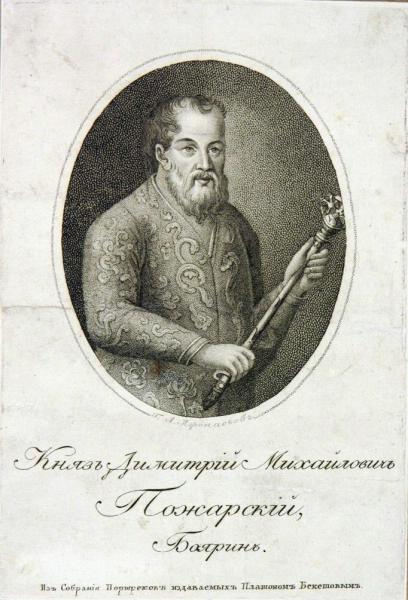
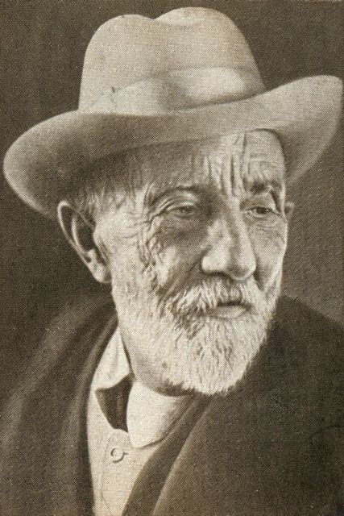
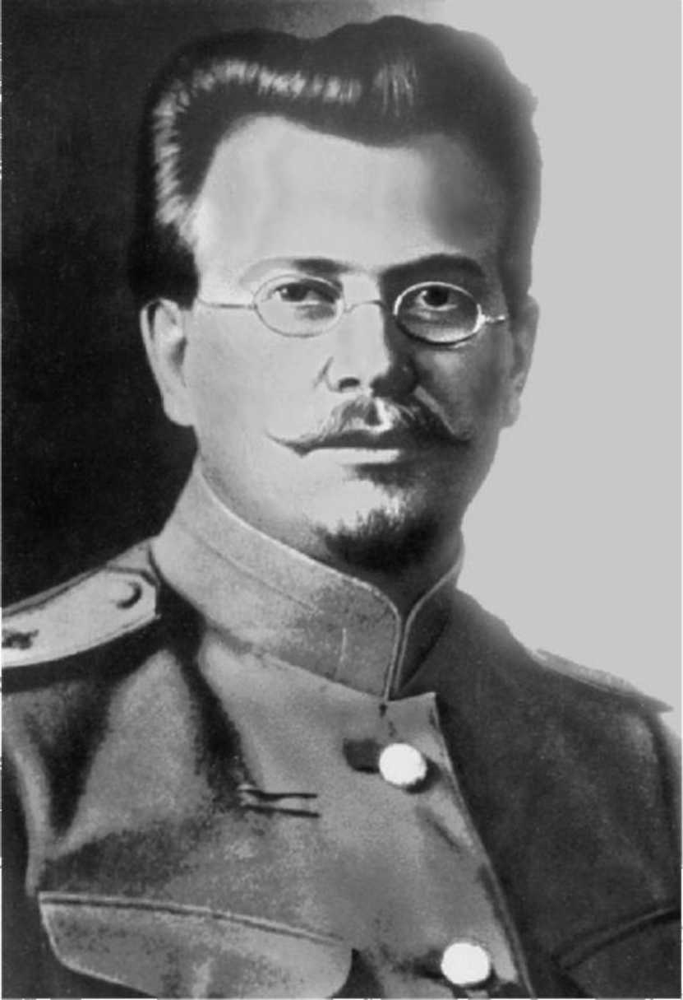
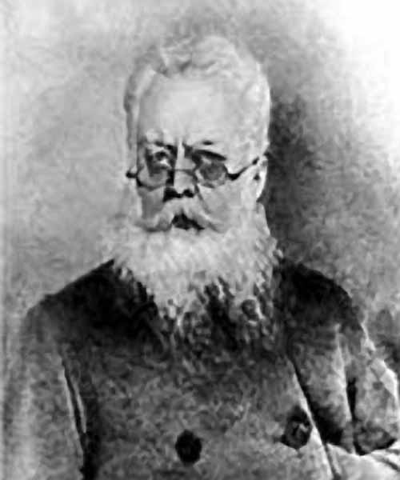
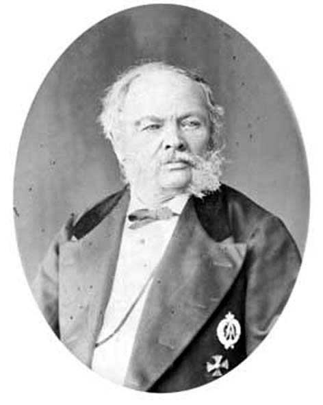
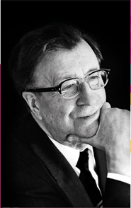

Знаменитости Пронского района
Пожарский Дмитрий Михайлович
БИОГРАФИЯ
 1 ноября 1578 года — 20 (30) апреля 1642 годаКнязь, боярин (1613), русский военачальник и государственный деятель, один из руководителей Второго ополчения (1612). Русский национальный герой.
Князь Дмитрий Михайлович Пожарский родился 1 ноября 1578 года в семье князя Михаила Федоровича Пожарского (ум. 1587), потомка удельных князей Стародубских.
Место рождения Д. М. Пожарского неизвестно. Существует версия, что князь мог родиться в селе Берсеневе Клинского уезда (оно входило в проданное его матери Марии Федоровны Беклемишевой), т. к. суздальские земли князей Пожарских в это время были конфискованы царем Иваном IV Грозным в пользу опричнины.
В 1593 году Д. М. Пожарский поступил на придворную службу. В 1598 году он имел придворный чин «стряпчего с платьем». В начале царствования Бориса Годуновакнязь неоднократно подвергался опале, но в 1602 году опала с него была снята, и он был произведен в стольники.
Д. М. Пожарский продолжал придворную службу при Лжедмитрии I и Василии IV Шуйском. В 1608-1610 годах принимал участие в борьбе со сторонникамиЛжедмитрия II, был полковым воеводой. В 1609 году за ревностную службу царьВасилии IV Шуйский пожаловал ему в вотчину прежнее поместье его предков - село Нижний Ландех с 20 деревнями, починками и пустошами в Суздальском уезде. В феврале 1610 года Василии IV Шуйский назначил Д. М. Пожарского воеводой города Зарайска Рязанского уезда.
В 1610 году Д. М. Пожарский не признал решения московских бояр призвать на российский трон сына польского короля Сигизмунда III - королевича Владислава. Князь принял участие в Первом ополчении (1611), примкнув в Рязани к отряду воеводы Прокопия Ляпунова. Во время восстания против польско-литовских интервентов в Москве 19-20 марта 1611 года участвовал в уличных боях, в ходе которых был ранен.
С конца октября 1611 года Д. М. Пожарский вместе с нижегородским земским старостой К. Мининым участвовал в формировании Второго ополчения, стал одним из его руководителей. В августе-октябре 1612 года принимал участие в боях с войсками литовского гетмана Я. К. Ходкевича с осажденным в Московском Кремле польским гарнизоном, которые завершились освобождением Москвы от интервентов 22 октября (4 ноября) 1612 года.
В конце 1612 - начале 1613 года Д. М. Пожарский являлся одним из руководителей Земского собора, на котором сыграл выдающуюся роль при избрании на царствоМихаила Федоровича Романова. При своем венчании 11 июля 1613 года царьМихаил Федорович пожаловал Д. М. Пожарского саном боярина, подтвердил прежние земельные дачи и наградил его новыми землями в Пурецкой волости Нижегородского уезда.
В 1615-1616 годах Д. М. Пожарский руководил боевыми действиями против польских отрядов А. И. Лисовского в районе Брянска и Карачева. В 1618 году он участвовал в отражении похода на Москву польских войск королевича Владиславаи украинских казаков гетмана П. К. Сагайдачного. С августа 1628 по сентябрь 1630 года Д. М. Пожарский был воеводой в Новгороде с титулом наместника Суздальского. Во время Смоленской войны 1633-1634 годов Д. М. Пожарский являлся 2-м воеводой русской резервной группы войск в Можайске.
В 1616-1618 и в 1632-1633 годах по поручению царя Михаила Федоровича Д. М. Пожарский возглавлял сбор «пятины» с торговых людей для пополнения казны в военное время. Князь руководил приказами: Галицкой четью (1617), Ямским (1619-1628), Разбойным (1621-1628), Приказных дел (1631-1632), Московским судным (1634-1638, 1639-1640).
Д. М. Пожарский выполнял также дипломатические поручения. В 1617 году он в чине наместника Коломенского вел переговоры с английским послом Дж. Мериком. В 1615-1617 годах участвовал в переговорах о заключении Столбовского мира со Швецией. В 1635 году князь был участником русско-польских переговоров, предшествовавших подписанию Поляновского мира. Весной 1640 года он, как наместник Коломенский, дважды принимал участие в переговорах с польскими послами. Эти переговоры являются последними службами Д. М. Пожарского, записанными в Разрядной книге.
Д. М. Пожарский скончался в Москве 20 (30) апреля 1642 года. Он был похоронен в родовой усыпальнице в Спасо-Евфимиевском монастыре в Суздале.
Мичурин Иван Владимирович
БИОГРАФИЯ
15 (27) октября 1855 года — 7 июня 1935 года
Русский и советский биолог, основоположник научной селекции плодовых, ягодных и других культур в СССР, почетный член АН СССР (1935), академик ВАСХНИЛ (1935).
Иван Владимирович Мичурин родился 15 (27) октября 1855 года в лесной даче «Вершина» близ деревни Долгое-Мичуровка Пронского уезда Рязанской губернии (ныне в Пронском районе Рязанской области) в семье обедневшего мелкопоместного дворянина отставного губернского секретаря В. И. Мичурина.
И. В. Мичурин получил начальное образование дома, а затем в Пронском уездном училище, посвящая свободное и каникулярное время работе в саду. Окончил училище в июне 1872 года. Отец готовил его по курсу гимназии к поступлению в Александровский лицей в Санкт-Петербурге, однако внезапная болезнь отца и продажа имения за долги внесли свои коррективы в эти планы.
В 1872 году И. В. Мичурин поступил в 1-ю Рязанскую классическую гимназию, однако в том же году был из нее исключен «за непочтительность к начальству». Тогда же ему пришлось переехать в Козлов, уездный город Тамбовской губернии, в котором прошла вся его дальнейшая жизнь.
В 1872-1876 годах И. В. Мичурин работал на станции Козлов Рязано-Уральской железной дороги. Сначала он был коммерческим конторщиком товарной конторы, с 1874 года занимал должность товарного кассира, а затем одного из помощников начальника станции. В 1876-1889 годах И. В. Мичурин был монтером часов и сигнальных аппаратов на участке железной дороги Козлов - Лебедян.
Борясь с постоянным недостатком средств, И. В. Мичурин открыл в городе, при своей квартире, часовую мастерскую. Свободное время он посвящал работам по созданию новых сортов плодово-ягодных культур. В 1875 году И. В. Мичурин арендовал в Козлове участок земли (около 500 кв. м), где начал работы по сбору коллекций растений и по выведению новых сортов плодовых и ягодных культур. В 1888 году он приобрел на окраине города новый участок (около 13 га), куда перенес свои растения и где жил и работал до конца жизни. С 1888 года этот участок близ слободы Турмасово стал одним из первых в России селекционных питомников.
В 1906 году увидели свет первые научные работы И. В. Мичурина, посвященные проблемам выведения новых сортов плодовых деревьев. В 1912 году труды ученого-селекционера были отмечены орденом Святой Анны 3-й степени, в 1913 году – знаком «За труды по сельскому хозяйству» в память 300-летия дома Романовых.
С установлением Советской власти в Козлове в 1917 году И. В. Мичурин без промедления заявил о своей готовности сотрудничать с новой администрацией. Его работы были оценены и получили широкое распространение. Ученый принимал участие в агрономических работах Наркомзема, консультировал специалистов сельского хозяйства по вопросам селекции, борьбы с засухой, поднятия урожайности, посещал местные агрономические совещания.
В 1920 году В. И. Ленин дал указание наркому земледелия С. П. Середе об организации изучения научных работ и практических достижений И. В. Мичурина. По поручению В. И. Ленина 11 сентября 1922 года ученого посетил Председатель ВЦИК М. И. Калинин. 20 ноября 1923 года Совнарком РСФСР признал опытный питомник И. В. Мичурина учреждением, имеющим государственное значение. На базе Мичуринского питомника в 1928 году была организована Селекционно-генетическая станция плодово-ягодных культур, которая в 1934 году была реорганизована в Центральную генетическую лабораторию имени И. В. Мичурина.
Труды ученого были отмечены орденами Ленина (1931) и Трудового Красного Знамени (1926). При его жизни в 1932 году город Козлов был переименован вМичуринск. И. В. Мичурин скончался 7 июня 1935 года и был похоронен на территории коллекционного питомника Плодоовощного института имени И. В. Мичурина (ныне Мичуринский государственный аграрный университет).
И. В. Мичурину принадлежит большой вклад в развитие генетики, в особенности плодовых и ягодных растений. Он стал одним из основоположников научной селекции сельскохозяйственных культур. Им были разработаны теоретические основы и некоторые практические приемы отдаленной гибридизации. Талантливый экспериментатор, почетный член АН СССР, действительный член ВАСХНИЛ, И. В. Мичурин вошел в науку как создатель свыше 300 видов растений.
Кравков Василий Павлович
БИОГРАФИЯ
 20 февраля (3 марта) 1859 года — 13 июля 1920 годаВоенный врач, тайный советник (1917). Автор военных дневников периода Русско-японской и Первой мировой войн.
Василий Павлович Кравков родился в Рязани в семье старшего писаря Управления Рязанского губернского воинского начальника унтер-офицера Павла Алексеевича Кравкова (1826–1910). Его мать Евдокия (Авдотья) Ивановна (1834–1891), до замужества – «калужская мещанка», была внебрачной дочерью Константина Дмитриевича Кавелина (1818–1885), известного отечественного историка, правоведа и социолога, одного из идеологов русского либерализма в эпоху реформ Александра II.
Братьями В. П. Кравкова были выдающийся русский ученый академик Николай Павлович Кравков (1865–1924), основоположник советской фармакологии, первый лауреат Ленинской премии (1926, посмертно), а также один из пионеров отечественного почвоведения профессор Сергей Павлович Кравков (1873–1938).
В 1871–1878 годах В. П. Кравков учился в 1-й Рязанской мужской гимназии, которую окончил с серебряной медалью. В 1878–1883 годах он продолжал обучение в Императорской Военно-медицинской академии в Санкт-Петербурге.
В ноябре 1883 года В. П. Кравков начал действительную службу по военному ведомству с должности младшего врача 26-го пехотного Могилевского полка, откуда до конца года был переведен в 159-й пехотный Гурийский полк. В 1884–1885 годах он был прикомандирован к Оренбургскому военному госпиталю.
В 1886 году В.П. Кравков был прикомандирован к Оренбургскому местному батальону, в котором с 1887 года исполнял обязанности старшего врача. С февраля 1888 года он нес службу в Казанском военном госпитале, где стал врачом-ординатором. В феврале 1888 года В. П. Кравков был произведен в титулярные советники (со старшинством с 1883 года), в мае за выслугу лет – в коллежские асессоры (со старшинством с 1886 года). В 1888 году он успешно сдал экзамен на степень доктора медицины при Императорском Казанском университете.
В 1889 году В. П. Кравков был откомандирован в Императорскую Военно-медицинскую академию «для усовершенствования в науках». 31 января (11 февраля) 1891 года постановлением конференции Императорской Военно-медицинской академии В. П. Кравков, старший врач 11-го гренадерского Фанагорийского полка, был удостоен степени доктора медицины. В марте 1891 года он был произведен в надворные советники.
В последующие годы В. П. Кравков занимал должности старшего врача 137-го пехотного Нежинского полка (1892–1895), Брянского местного арсенала (1895–1896), 138-го пехотного Болховского полка (1896–1899). В 1899–1900 годах он был старшим врачом сводного лазарета 1-й бригады 35-й пехотной дивизии в Рязани.
В 1900–1905 годах В. П. Кравков служил дивизионным врачом 35-й пехотной дивизии XVII армейского корпуса. В 1901 году он был произведен в статские советники. В 1904–1905 годах принимал участие в Русско-японской войне, во время Ляоянского сражения несколько дней работал под огнем противника.
В 1906 году В. П. Кравков был произведен в действительные статские советники. По достижении этого чина он, согласно законам Российской империи, получил возможность претендовать на права потомственного дворянства и в 1908 году был вписан в III часть Дворянской родословной книги Рязанской губернии как основатель нового дворянского рода.
В 1906–1908 годах В. П. Кравков служил в Москве в должности корпусного врача, в 1908–1910 годах – в Ярославле, где был бригадным врачом 53-й, а позднее 62-й пехотной резервной бригады. В 1910 году В. П. Кравков был перемещен на должность корпусного врача XXV армейского корпуса и вернулся в Москву. С лета 1914 года город стал постоянным местом жительства его семьи.
В 1914–1917 годах В. П. Кравков принимал участие в Первой мировой войне. В августе–сентябре 1914 года в составе XXV армейского корпуса (4-я армия, Юго-Западный фронт) он участвовал в Галицийской битве, с сентября 1914 по декабрь 1915 годов занимал должность помощника начальника санитарного отдела штаба 10-й армии (Северо-Западный фронт), в декабре 1915 года был назначен корпусным врачом XLIV («Осовецкого») армейского корпуса, в январе 1916 года был переведен на ту же должность в XXXVII армейский корпус. С апреля 1916 года и до увольнения из армии В. П. Кравков служил корпусным врачом 7-го Сибирского корпуса, воевавшего на Северном, а затем на Юго-Западном фронте.
За годы службы по военному ведомству В. П. Кравков был удостоен орденов Св. Станислава 3-й (1888), 2-й (1899) и 1-й (1915) степеней, Св. Анны 3-й (1895), 2-й (1903, с 1904 – с мечами) и 1-й (1915, с 1916 – с мечами) степеней, а также Св. Владимира с мечами 4-й (1904) и 3-й (1905) степеней.
В. П. Кравков приветствовал Февральскую революцию 1917 года и оказался востребованным в период пребывания у власти Временного правительства. В мае 1917 года он был произведен в тайные советники. В июне 1917 года Н. Н. Бурденко предлагал его кандидатуру для замещения вакантной должности Московского окружного военно-санитарного инспектора, однако это назначение так и не состоялось.
В июле 1917 года, вследствие разногласий с исполкомом Совета санитаров Санитарного управления Юго-Западного фронта, В. П. Кравков был уволен из армии и вернулся в Москву.
В первые годы советской власти В. П. Кравков принимал участие в организации военно-санитарных органов РСФСР. В октябре 1918 года под его руководством была создана амбулатория управления делами Реввоенсовета Республики. В. П. Кравков руководил ей до осени 1919 года. Впоследствии он продолжал сотрудничество с советскими военно-санитарными учреждениями.
5 июля 1920 года В. П. Кравков был арестован органами ВЧК по обвинению в злоупотреблениях при оформлении освобождений от призыва РККА. 13 июля 1920 года он был осужден Президиумом ВЧК и приговорен к высшей мере наказания. Сведений о приведении приговора в исполнение нет, но, скорее всего, жизнь Василия Павловича трагически оборвалась в тот же день.
Научное и литературное наследие В. П. Кравкова невелико. Его перу принадлежит ряд работ по отдельным вопросам практической медицины – «К вопросу об участии лимфатических желез и костного мозга в острой малярийной инфекции» (Оренбург, 1885), «О деятельности желудка в течении разлитого воспаления почек» (Санкт-Петербург, 1890), «К вопросу о деятельности желудка в течении затяжных заболеваний почек» (Санкт-Петербург, 1891), «Случай гнойного воспаления печени на почве малярийного заболевания» (Москва, 1894). Интересным опытом медицинской публицистики стала его книга «Заразные факторы людского злополучия и рациональные нормы практической постановки мер личной, общественной и правительственной борьбы с ними» (Ярославль, 1910).
Наибольший интерес в историческом плане представляют дневники В. П. Кравкова, которые он вел во время русско-японской и Первой мировой войн. В 1919 году их рукописи были переданы автором Румянцевскому музею в Москве, ныне хранятся в личных фондах Российской государственной библиотеки. Значительный фрагмент первого дневника, повествующий о Ляоянском сражении (1904), был опубликован в альманахе «Время и судьбы» (Свет милосердия. Дневник участника русско-японской войны (1904–1905) дивизионного врача В. П. Кравкова // Время и судьбы. «Военные мемуары». Вып. 1. М., 1991. – стр. 259–286.). Дневники времен Первой мировой войны охватывают период с июля 1914 по август 1917 года. К 100-летию со дня начала Первой мировой войны ведется работа по их подготовке к публикации.
Сын В. П. Кравкова – Сергей Васильевич Кравков (1893–1951), выдающийся советский психофизиолог, один из основоположников физиологической оптики, автор научной теории зрения.
Золотов Василий Антонович
БИОГРАФИЯ
.jpg) 3 марта 1915 года — 16 мая 1995 года
Прозаик, поэт. Член Союза писателей СССР (с 1954 г.).
Василий Антонович Золотов родился 3 марта 1915 года в крестьянской семье в селе Дурное Пронского уезда Рязанской губернии (ныне село ОктябрьскоеПронского района Рязанской области). В 1923 году поступил в школу I ступени, по окончании которой проходил обучение в школе крестьянской молодежи в Большом Селе. В 1930 году поступил в Рязанский землеустроительный техникум. Работал с 16 лет, проводил топографические съемки в совхозе Мурмино. В этом же возрасте опубликовал первый очерк в журнале «Комбайн».
В 1932 году Золотов В. А. поступил на литературный факультет Московского областного педагогического института. Будучи студентом пединститута, активно занимался литературной работой. В эти годы встречался с А. Н. Толстым, В. В. Вересаевым, А. М. Горьким, А. С. Новиковым-Прибоем. Встречам и беседам с А. С. Новиковым-Прибоем посвятил очерк «Рукопожатие Силыча».
В 1935 году Золотов В. А. был арестован за положительные отзывы о творчестве нобелевского лауреата И. А. Бунина и осужден на три года лишения свободы. После освобождения в конце 1937 года работал учителем русского языка и литературы в родном селе.
Участник Великой Отечественной войны. На фронте с 1941 года. Принимал участие в боях под Гжатском и Вязьмой, в боях за освобождение Латвии. Отмечен государственными наградами. На фронте писал стихи, которые печатались в «Красноармейской правде», «Суворовце».
С 1948 года Золотов В. А. начинает писать книги для детей. Первая книга стихов для детей «Лесные друзья» выходит в Риге на латышском и русском языках. Впоследствии Василий Антонович обращается к прозе, продолжая некоторое время писать для детей.
С 1954 года Василий Антонович Золотов – член Союза писателей СССР. С 1960 по 1970 гг. он руководил русской секцией Союза писателей Латвии. В 1970-1977 годах жил и работал на Камчатке, работал первым помощником капитана плавбазы «Ламут», принимал активное участие в создание Камчатской писательской организации, руководил организацией в течение 2 лет.
С 1977 года жил и работал в Рязани. С 1984 по 1990 гг. являлся ответственным секретарем Рязанской писательской организации. При участии В. А. Золотова были возобновлены литературные чтения на сасовской земле, посвященные А. С. Новикову-Прибою.
Библиография:
• Лесные друзья: стихи. – Рига, 1948
• Зеленый венок: сборник стихов для детей. – Рига, 1950
• Там, где шумит море: повесть. – М.: Сов. Россия, 1959
• Приключения лососенка. – М.: Сов. Россия, 1959
• Земля горячая: роман. – Владивосток, 1969
• Море без чаек: повесть. – 3-е изд. – Рязань, 1985
• Заманиха: роман. – М., 1978
• Меж крутых бережков: повесть. – Рязань, 1990
• Пронское восхождение// Голубая Мещера. – М., 1988
• Стихи// Час России. – М., 1988
• Мечами крещены: исторический роман. – Рязань, 1994
• Туфли для Синеглазки: Оле, Маше и Алле – сердечно: рассказ // Приокская газета. – 1995
3 марта 1915 года — 16 мая 1995 года
Прозаик, поэт. Член Союза писателей СССР (с 1954 г.).
Василий Антонович Золотов родился 3 марта 1915 года в крестьянской семье в селе Дурное Пронского уезда Рязанской губернии (ныне село ОктябрьскоеПронского района Рязанской области). В 1923 году поступил в школу I ступени, по окончании которой проходил обучение в школе крестьянской молодежи в Большом Селе. В 1930 году поступил в Рязанский землеустроительный техникум. Работал с 16 лет, проводил топографические съемки в совхозе Мурмино. В этом же возрасте опубликовал первый очерк в журнале «Комбайн».
В 1932 году Золотов В. А. поступил на литературный факультет Московского областного педагогического института. Будучи студентом пединститута, активно занимался литературной работой. В эти годы встречался с А. Н. Толстым, В. В. Вересаевым, А. М. Горьким, А. С. Новиковым-Прибоем. Встречам и беседам с А. С. Новиковым-Прибоем посвятил очерк «Рукопожатие Силыча».
В 1935 году Золотов В. А. был арестован за положительные отзывы о творчестве нобелевского лауреата И. А. Бунина и осужден на три года лишения свободы. После освобождения в конце 1937 года работал учителем русского языка и литературы в родном селе.
Участник Великой Отечественной войны. На фронте с 1941 года. Принимал участие в боях под Гжатском и Вязьмой, в боях за освобождение Латвии. Отмечен государственными наградами. На фронте писал стихи, которые печатались в «Красноармейской правде», «Суворовце».
С 1948 года Золотов В. А. начинает писать книги для детей. Первая книга стихов для детей «Лесные друзья» выходит в Риге на латышском и русском языках. Впоследствии Василий Антонович обращается к прозе, продолжая некоторое время писать для детей.
С 1954 года Василий Антонович Золотов – член Союза писателей СССР. С 1960 по 1970 гг. он руководил русской секцией Союза писателей Латвии. В 1970-1977 годах жил и работал на Камчатке, работал первым помощником капитана плавбазы «Ламут», принимал активное участие в создание Камчатской писательской организации, руководил организацией в течение 2 лет.
С 1977 года жил и работал в Рязани. С 1984 по 1990 гг. являлся ответственным секретарем Рязанской писательской организации. При участии В. А. Золотова были возобновлены литературные чтения на сасовской земле, посвященные А. С. Новикову-Прибою.
Библиография:
• Лесные друзья: стихи. – Рига, 1948
• Зеленый венок: сборник стихов для детей. – Рига, 1950
• Там, где шумит море: повесть. – М.: Сов. Россия, 1959
• Приключения лососенка. – М.: Сов. Россия, 1959
• Земля горячая: роман. – Владивосток, 1969
• Море без чаек: повесть. – 3-е изд. – Рязань, 1985
• Заманиха: роман. – М., 1978
• Меж крутых бережков: повесть. – Рязань, 1990
• Пронское восхождение// Голубая Мещера. – М., 1988
• Стихи// Час России. – М., 1988
• Мечами крещены: исторический роман. – Рязань, 1994
• Туфли для Синеглазки: Оле, Маше и Алле – сердечно: рассказ // Приокская газета. – 1995
Боклевский Петр Михайлович
 Боклевский Петр Михайлович (1816—1897) — художник-иллюстратор, график, карикатурист. Род. в Ряз. губ. в семье прапорщика. Учился в Моск. ун-те (1834—1840) и в АХ у К. П. Брюллова, в мастерской П. К. Клодта. Посетил Францию, Италию, Испанию, Швейцарию, создал ряд пастельных портретов. Издал альбом карикатур на Крымскую войну (1855). Автор илл. к произв. А. Н. Островского, Н. В. Гоголя, П. И. Мельникова-Печерского, Ф. М. Достоевского, А. С. Грибоедова, А. С. Пушкина, М. Ю. Лермонтова, Л. Н. Толстого, И. С. Тургенева. Выработал жанр социально заостренного портрета лит. героя. Для худ. манеры илл. Б. характерны живописная объемная лепка формы, тонкая моделировка светотени; объем достигается плавными переходами от одного тона к другому, без применения штриха. В акварельных работах использовал теплую гамму тонов: розовых, оранжевых, коричневых. Лит.: Никифораки Н. П. М. Боклевский. М., 1952; Орлова Т. В. П. М. Боклевский. М., 1971; Крупин Е. Н. "Я жил среди них...". М., Рязань, 1985.
Загоскин Лаврентий Алексеевич  Загоскин Лаврентий Алексеевич [21.5(2.6).1808—22.1(3.2). 1890], русский морской офицер, исследователь Аляски. Окончил Морской кадетский корпус, служил в Петербурге и Астрахани. В 1839 перешёл на службу в Российско-Американскую компанию. В 1842—44 начальник экспедиции на Аляске, исследовал главным образом реки Куикпак и Кускоквим. Результаты экспедиции опубликованы в труде "Пешеходная опись части русских владений в Америке, произведенная в 1842, 1843 и 1844 гг." (ч. 1—2, 1847—48), переиздание — "Путешествия и исследования лейтенанта Лаврентия Загоскина в Русской Америке в 1842—1844 гг."(1956). Лит.: Адамов А., Первые русские исследователи Аляски, М., 1950.
Птица Клавдий Борисович  Птица Клавдий Борисович [р. 21.1(3.2).1911, село Пронск, ныне Рязанской области], советский хоровой дирижёр, народный артист СССР (1966). В 1937 окончил хоровое отделение Московской консерватории. Руководил хорами оперной студии Московской консерватории (1936—38) и Московской филармонии (1938—41); был хормейстером Государственного хора русской песни (затем Государственный хор СССР, 1943—46). С 1950 художественный руководитель Большого хора Всесоюзного радио, где подготовил много опер, ораторий, кантат и хоров классиков и современных композиторов. В 1938—41 и с 1943 преподаёт в Московской консерватории (с 1956 профессор), с 1960 заведующий кафедрой хорового дирижирования. Организатор, декан дирижёрско-хорового факультета Государственного музыкально-педагогического института им. Гнесиных (1946—60). Автор книг и статей, в том числе: "Очерки по технике дирижирования хором" (1948), "Мастера хорового искусства в Московской консерватории" (1970). Награжден 2 орденами, а также медалями.
Пронский Владимир Дмитриевич (12.03.1949 г.)
.jpg) Писатель, публицист.
Родился в крестьянской семье в деревне Княжая Пронского района Рязанской области.
Окончил Пронскую среднюю школу. До службы в рядах Вооруженных Сил работал на рязанских предприятиях, а после службы — в Москве.
Как литератор дебютировал в 1967 году в районной газете «Сельская жизнь». Напутствуя один из рассказов земляка, Б. Можаев писал: «Мне нравятся его рассказы – это незамысловатые истории о жизни людей самых обычных. Характеры простые, но и своеобразные, отмеченные живыми и достоверными наклонностями, привычками и взглядами».
Член Союза писателей России, лауреат Международной литературной премии им. Платонова «Умное сердце». Автор романа «Провинция слез», нескольких сборников рассказов.
Живет в Москве.
Писатель, публицист.
Родился в крестьянской семье в деревне Княжая Пронского района Рязанской области.
Окончил Пронскую среднюю школу. До службы в рядах Вооруженных Сил работал на рязанских предприятиях, а после службы — в Москве.
Как литератор дебютировал в 1967 году в районной газете «Сельская жизнь». Напутствуя один из рассказов земляка, Б. Можаев писал: «Мне нравятся его рассказы – это незамысловатые истории о жизни людей самых обычных. Характеры простые, но и своеобразные, отмеченные живыми и достоверными наклонностями, привычками и взглядами».
Член Союза писателей России, лауреат Международной литературной премии им. Платонова «Умное сердце». Автор романа «Провинция слез», нескольких сборников рассказов.
Живет в Москве.